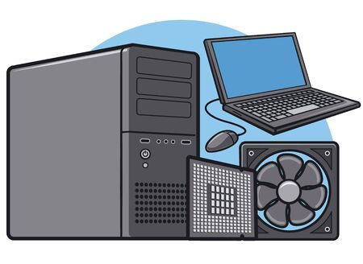

-
Recursos humanos:son las personas que interactuan con el sistema de informacion,suministran datos o utilizan el sistema para generar datos.
-
Fuente:son los datos e informacion que se introducen en el sistema,es decir, son las entradas requeridas para que el sistema informacion funcione.

-
Programas:software ejecutado por la computadora,el cual procesa la informacion de entrada para generar los resultados esperados.
 Pagina principal
Pagina principal
-
Telecomunicaciones:abarca el software y el hardware que permite la transmision en forma electronica de texto o imagenes,entre otros.
-
Politicas y reglas de operacion:aplicadas a los procedimientos y mecanismos para hacer que una aplicacion de computadora trabaje de acuerdo con estas o regir la parte funcional del proceso administrativo de la empresa.